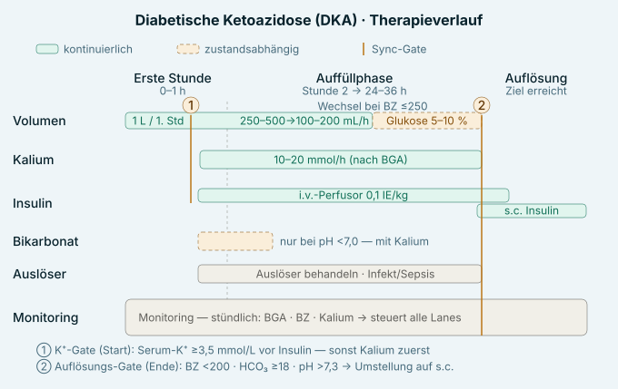

Diagnose
Trias: Hyperglykämie (BZ >250 mg/dL) + Ketonnachweis (β-HB) + metabolische Azidose mit positiver Anionenlücke. pH <7,3 · HCO₃⁻ <18 mmol/L · AG >10–12. Cave: euglykäme DKA unter SGLT2-Inhibitoren. (Konsensus 2024: Anionenlücke nicht mehr Primärkriterium; β-HB ≥3 mmol/L als Ketonkriterium.)
Schweregrad
BZ >250 + Ketone positiv in allen Graden.
| Kriterium | Leicht | Mittel | Schwer |
|---|
| pH (art.) | 7,25–7,3 | 7,0–7,24 | <7,0 |
| Bikarbonat | 15–18 | 10–15 | <10 mmol/L |
| Anionenlücke | >10 | >12 | >12 |
| Vigilanz | wach | wach–somnolent | somnolent–komatös |
DD HHS: BZ >600 · pH >7,3 · HCO₃⁻ >18 · Ketone negativ/minimal.
Initialdiagnostik
BZ + Ketone (β-HB), venöse BGA mit AG, Elektrolyte (Na/K/Mg/Cl/Phosphat), Harnstoff/Kreatinin, BB/CRP (±PCT), HbA1c, Troponin/Lipase nach Verdacht, Urin-Stix.
Volumen
Balancierte Vollelektrolytlösung; Defizit ~6–8 L, Ersatz 5–10 L/24–36 h (≥15 % KG); Steuerung MAP >65, ZVD 8–12, Diurese; Glukose-Trägerwechsel bei BZ ≤250. Cave Überwässerung (Hirn-/Lungenödem), Vorsicht bei Herzinsuffizienz/CKD.
Kalium — Ziel 4–5 mmol/L · Kontrolle 2-stündlich · ≤10 mmol/h peripher, ≤20 über ZVK
- >5,5 → keine Gabe, Insulin starten, nachmessen
- 3,5–5,5 → 10–20 mmol/h (≈40 mmol/1000 mL), Insulin parallel
- <3,5 → KCl zuerst, Insulin pausieren bis K⁺ ≥3,5
- 2024-Konsensus: Substitution bereits ab K⁺ <5,0 mmol/L.
Insulin
Start ½ h nach Volumenbeginn; Bolus 0,1 IE/kg → Perfusor; BZ-Abfall 50–100 mg/dL/h, in 24 h nicht <250; <40/h → Rate ×1,5; ≤250 → Glukose dazu, Insulin weiter; Ziel = Ketonkörper-Clearance, nicht Normoglykämie. Umstellung s.c. bei Auflösung mit 1–2 h Überlappung → Basis-Bolus 0,3–0,6 IE/kg/Tag.
Bikarbonat
Nur pH <7,0, immer mit Kalium; NaHCO₃ (mmol) = −BE × kg × 0,3; Risiken: Hypokaliämie, Hirnödem, ↓ O₂-Abgabe.
Phosphat & Natrium
Phosphat nur <0,3 mmol/L bzw. bei Symptomatik (Konsensus: <1,0), nicht bei Hypokalzämie; korrigiertes Na +1,6 mmol/L pro 100 mg/dL BZ über 100.
Monitoring
h 1–4 stündlich BZ/Na/K/BGA; 2–4-stündlich Kreatinin/Harnstoff/Phosphat; täglich Ca/Cl/CK/BB/Urin-Ketone.
Auslöser
Infekt/Sepsis (häufigster situativer), fehlende/fehlerhafte Insulingabe, Erstmanifestation (~25 %), MI/Pankreatitis/OP.
Komplikationen — meist iatrogen
Hypoglykämie, Hypokaliämie, hyperchlorämische Azidose, Hirnödem (v. a. Kinder/Jugendliche: Kopfschmerz, Vigilanz↓, Bradykardie + Hypertonie), Lungenödem; selten DIC, Mesenterialischämie.
Auflösung
BZ <200 · HCO₃⁻ ≥18 · venöser pH >7,3 (Konsensus: zusätzlich β-HB <0,6 mmol/L).